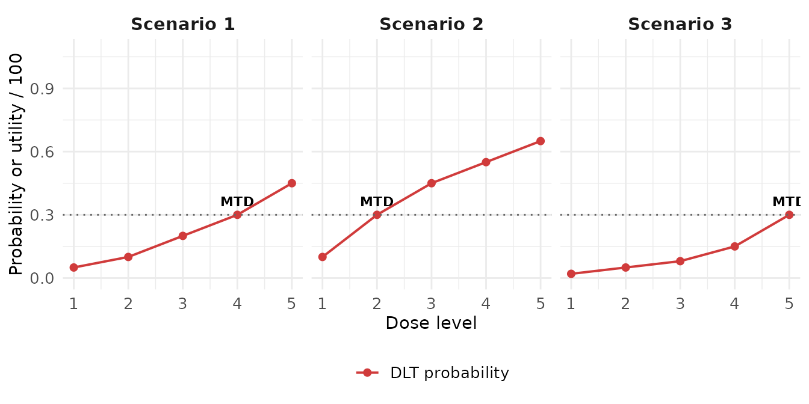
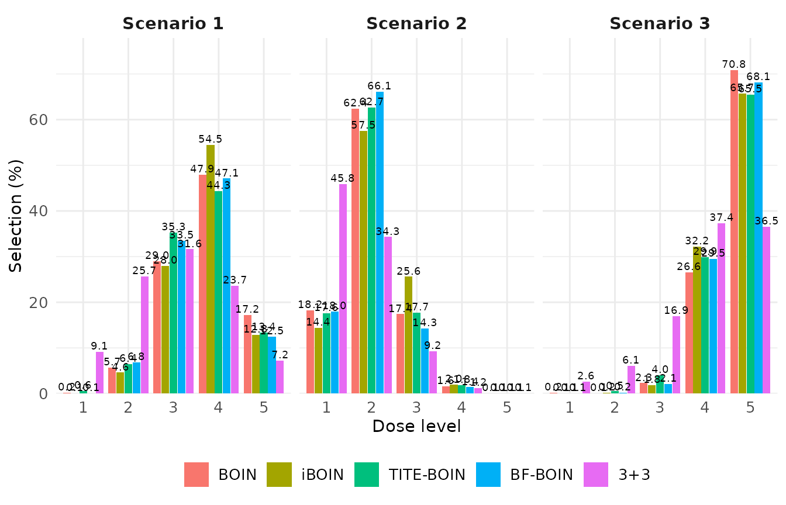
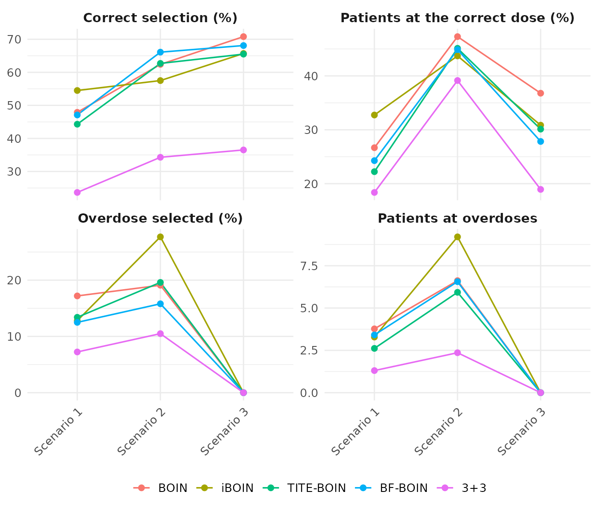
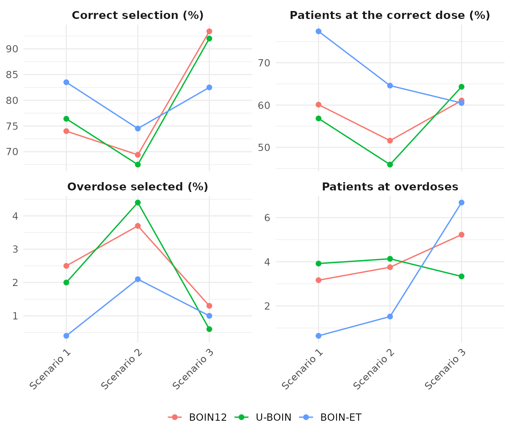
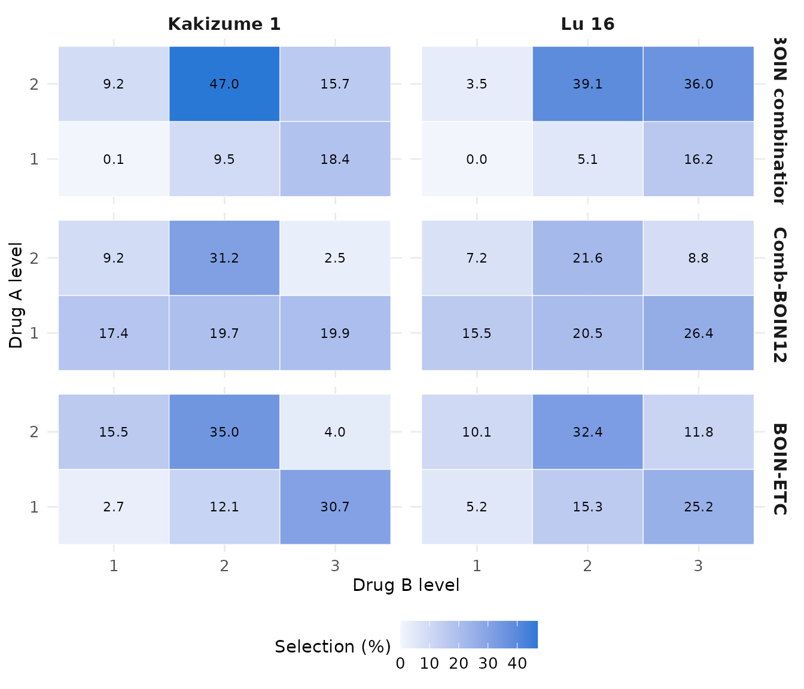
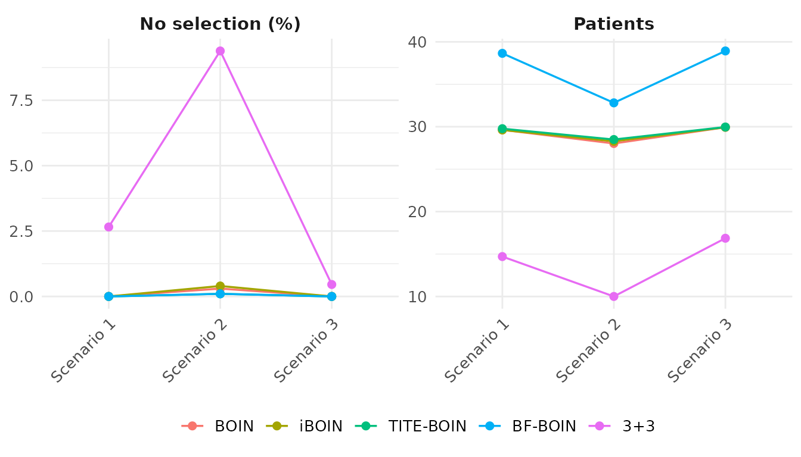

Comparing designs and scenarios
Source:vignettes/simFastBOIN-comparison.Rmd
simFastBOIN-comparison.RmdThree functions
A design is chosen by running the candidate designs under the same scenarios and setting their operating characteristics side by side. Three functions do this for every design of the package but the waterfall design.
-
oc_scenarios()tabulates the scenarios with the true doses: the true MTD, the dose whose DLT rate is closest to the target, and, when the scenarios have response rates, the true utility of every dose and the true OBD, the dose with the highest utility among the doses with an acceptable DLT rate (and response rate). -
oc_results()collects the results of the simulation functions in one long data frame: the selection percentage and the average numbers of patients, DLTs and responses of every dose, and the quantities of the whole trial. -
oc_compare()judges the same results against the true doses: how often each design selects the true MTD (for the designs that select an MTD) or the true OBD (for the designs that select an OBD), how many patients it treats there, how often it selects an overdose and how many patients it treats at overdoses, how often it selects no dose, its sample size and, for the designs with time, its duration.
Each design is given as the result of a simulation function for one
scenario, as the result of its _multi version, or as a list
of results for single scenarios named by the scenarios, which is the way
to give oc_3p3() several scenarios. Nothing is simulated
again: the three functions read the summaries that the results hold. The
designs must be all for a single agent or all for a drug combination,
with the same number of doses. The waterfall design selects one
combination at every level of drug A, so that its results do not fit the
summaries, which assume one selected dose per trial;
vignette("simFastBOIN-combination") describes its own
summaries of the MTD contour.
Designs that select the MTD
Three scenarios of five doses, a target DLT rate of 0.30 and 30 patients in cohorts of three serve for the designs that look for the MTD. The response rates are needed by BF-BOIN, which backfills patients to lower doses that have shown a response.
scenarios <- list(
"Scenario 1" = list(p_true = c(0.05, 0.10, 0.20, 0.30, 0.45),
p_resp = c(0.10, 0.20, 0.35, 0.40, 0.45)),
"Scenario 2" = list(p_true = c(0.10, 0.30, 0.45, 0.55, 0.65),
p_resp = c(0.20, 0.35, 0.40, 0.45, 0.50)),
"Scenario 3" = list(p_true = c(0.02, 0.05, 0.08, 0.15, 0.30),
p_resp = c(0.05, 0.10, 0.20, 0.30, 0.40))
)
truth <- oc_scenarios(lapply(scenarios, function(s) s$p_true),
target = 0.30)
truth
#> True scenarios: 3 scenario(s), 5 doses
#> True MTD: DLT probability closest to 0.3
#>
#> Scenario 1
#> 1 2 3 4 5
#> p_true 0.05 0.10 0.20 0.30 0.45
#> true MTD *
#>
#> Scenario 2
#> 1 2 3 4 5
#> p_true 0.10 0.30 0.45 0.55 0.65
#> true MTD *
#>
#> Scenario 3
#> 1 2 3 4 5
#> p_true 0.02 0.05 0.08 0.15 0.30
#> true MTD *
plot(truth)
The designs are BOIN, iBOIN with the skeleton of Scenario 4 of Zhou et al. (2021), whose prior MTD is dose 4, and a prior effective sample size of 3, TITE-BOIN and BF-BOIN with a DLT window of one month and two patients a month, and the 3+3 design, whose operating characteristics are computed in closed form. Every simulated design uses the same seed.
design <- list(target = 0.30, scenarios = scenarios, n_cohort = 10,
cohort_size = 3, n_trials = 1000, seed = 123)
timing <- list(window = 1, accrual_rate = 2)
boin <- do.call(sim_boin_multi, design)
iboin <- do.call(sim_iboin_multi,
c(design, list(skeleton = c(0.04, 0.10, 0.19, 0.30, 0.42),
prior_ess = 3)))
tite <- do.call(sim_tite_boin_multi, c(design, timing))
bf <- do.call(sim_bf_boin_multi, c(design, timing))
three <- lapply(scenarios, function(s) oc_3p3(p_true = s$p_true))oc_results() sets the selection and the allocation of
every dose side by side, and its plot() method draws the
selection.
results <- oc_results(BOIN = boin, iBOIN = iboin, "TITE-BOIN" = tite,
"BF-BOIN" = bf, "3+3" = three)
results
#> Operating characteristics of 5 design(s) in 3 scenario(s)
#>
#> Scenario 1
#> Selection (%) by dose
#> 1 2 3 4 5
#> BOIN 0.2 5.7 29.0 47.9 17.2
#> iBOIN 0.1 4.6 28.0 54.5 12.8
#> TITE-BOIN 0.6 6.4 35.3 44.3 13.4
#> BF-BOIN 0.1 6.8 33.5 47.1 12.5
#> 3+3 9.1 25.7 31.6 23.7 7.2
#> Patients by dose
#> 1 2 3 4 5
#> BOIN 3.7 5.6 8.6 7.9 3.8
#> iBOIN 3.2 4.6 8.8 9.7 3.3
#> TITE-BOIN 4.4 7.0 9.2 6.6 2.6
#> BF-BOIN 5.0 8.9 11.9 9.4 3.4
#> 3+3 3.4 3.6 3.7 2.7 1.3
#> Per trial (averages)
#> No selection (%) Patients DLTs Responses Duration
#> BOIN 0.0 29.6 6.6 - -
#> iBOIN 0.0 29.6 6.9 - -
#> TITE-BOIN 0.0 29.8 6.0 - 16.3
#> BF-BOIN 0.0 38.6 7.9 11.7 21.9
#> 3+3 2.7 14.7 2.7 - -
#>
#> Scenario 2
#> Selection (%) by dose
#> 1 2 3 4 5
#> BOIN 18.2 62.4 17.4 1.6 0.1
#> iBOIN 14.4 57.5 25.6 2.0 0.1
#> TITE-BOIN 17.6 62.7 17.7 1.8 0.1
#> BF-BOIN 18.0 66.1 14.3 1.4 0.1
#> 3+3 45.8 34.3 9.2 1.2 0.1
#> Patients by dose
#> 1 2 3 4 5
#> BOIN 8.2 13.3 5.7 0.9 0.1
#> iBOIN 6.7 12.4 7.7 1.4 0.1
#> TITE-BOIN 9.7 12.9 5.0 0.9 0.1
#> BF-BOIN 11.5 14.7 5.6 0.9 0.1
#> 3+3 3.7 3.9 1.9 0.4 0.0
#> Per trial (averages)
#> No selection (%) Patients DLTs Responses Duration
#> BOIN 0.3 28.0 8.0 - -
#> iBOIN 0.4 28.3 8.8 - -
#> TITE-BOIN 0.1 28.5 7.7 - 15.3
#> BF-BOIN 0.1 32.8 8.6 10.2 19.5
#> 3+3 9.4 10.0 2.7 - -
#>
#> Scenario 3
#> Selection (%) by dose
#> 1 2 3 4 5
#> BOIN 0.2 0.1 2.3 26.6 70.8
#> iBOIN 0.1 0.2 1.8 32.2 65.7
#> TITE-BOIN 0.1 0.5 4.0 29.9 65.5
#> BF-BOIN 0.1 0.2 2.1 29.5 68.1
#> 3+3 2.6 6.1 16.9 37.4 36.5
#> Patients by dose
#> 1 2 3 4 5
#> BOIN 3.2 3.6 4.6 7.5 11.0
#> iBOIN 3.0 3.2 4.6 10.0 9.2
#> TITE-BOIN 3.6 4.3 5.4 7.7 9.0
#> BF-BOIN 3.6 5.0 7.9 11.6 10.8
#> 3+3 3.2 3.4 3.5 3.6 3.2
#> Per trial (averages)
#> No selection (%) Patients DLTs Responses Duration
#> BOIN 0.0 29.9 5.1 - -
#> iBOIN 0.0 29.9 4.9 - -
#> TITE-BOIN 0.0 30.0 4.6 - 16.6
#> BF-BOIN 0.0 38.9 6.0 10.1 22.2
#> 3+3 0.5 16.9 2.0 - -
plot(results)
oc_compare() judges the same results against
truth. An overdose is a dose with a DLT rate above the
target, the tox_limit of truth.
comparison <- oc_compare(BOIN = boin, iBOIN = iboin, "TITE-BOIN" = tite,
"BF-BOIN" = bf, "3+3" = three, truth = truth)
comparison
#> Comparison of 5 design(s) with the true doses
#> Correct: the true MTD for designs selecting an MTD, the true OBD for designs selecting an OBD
#> Overdose: true DLT probability above 0.3
#>
#> Scenario 1
#> Correct (%) Pts at correct (%) Overdose sel. (%)
#> BOIN (MTD) 47.9 26.7 17.2
#> iBOIN (MTD) 54.5 32.7 12.8
#> TITE-BOIN (MTD) 44.3 22.2 13.4
#> BF-BOIN (MTD) 47.1 24.3 12.5
#> 3+3 (MTD) 23.7 18.4 7.2
#> Pts at overdose No selection (%) Patients Duration
#> BOIN (MTD) 3.8 0.0 29.6 -
#> iBOIN (MTD) 3.3 0.0 29.6 -
#> TITE-BOIN (MTD) 2.6 0.0 29.8 16.3
#> BF-BOIN (MTD) 3.4 0.0 38.6 21.9
#> 3+3 (MTD) 1.3 2.7 14.7 -
#>
#> Scenario 2
#> Correct (%) Pts at correct (%) Overdose sel. (%)
#> BOIN (MTD) 62.4 47.3 19.1
#> iBOIN (MTD) 57.5 43.7 27.7
#> TITE-BOIN (MTD) 62.7 45.1 19.6
#> BF-BOIN (MTD) 66.1 44.9 15.8
#> 3+3 (MTD) 34.3 39.1 10.5
#> Pts at overdose No selection (%) Patients Duration
#> BOIN (MTD) 6.6 0.3 28.0 -
#> iBOIN (MTD) 9.2 0.4 28.3 -
#> TITE-BOIN (MTD) 5.9 0.1 28.5 15.3
#> BF-BOIN (MTD) 6.6 0.1 32.8 19.5
#> 3+3 (MTD) 2.4 9.4 10.0 -
#>
#> Scenario 3
#> Correct (%) Pts at correct (%) Overdose sel. (%)
#> BOIN (MTD) 70.8 36.8 0.0
#> iBOIN (MTD) 65.7 30.9 0.0
#> TITE-BOIN (MTD) 65.5 30.1 0.0
#> BF-BOIN (MTD) 68.1 27.8 0.0
#> 3+3 (MTD) 36.5 18.9 0.0
#> Pts at overdose No selection (%) Patients Duration
#> BOIN (MTD) 0.0 0.0 29.9 -
#> iBOIN (MTD) 0.0 0.0 29.9 -
#> TITE-BOIN (MTD) 0.0 0.0 30.0 16.6
#> BF-BOIN (MTD) 0.0 0.0 38.9 22.2
#> 3+3 (MTD) 0.0 0.5 16.9 -
plot(comparison)
The skeleton puts the prior MTD at the true MTD of Scenario 1, which iBOIN selects in 54.5 percent of the trials and BOIN in 47.9 percent; in Scenarios 2 and 3 the prior MTD is not the true MTD, and the percentages are 57.5 and 65.7 for iBOIN against 62.4 and 70.8 for BOIN. In Scenario 1, TITE-BOIN lasts 16.3 months on average and BF-BOIN 21.9 months; BF-BOIN treats 38.6 patients on average, the backfilled ones included, against 29.6 for BOIN. The designs without time have no duration.
Scores in the place of DLT rates: gBOIN and gBOIN-ET
The results of gBOIN and gBOIN-ET hold the true mean normalized
scores of the doses in the place of the DLT and response rates, and
oc_compare() checks that the results agree with
truth. Their truth is therefore built from these scores,
and they are compared with designs on the same scores, for example the
two elimination rules of gBOIN in Scenarios 1 and 7 of Mu et al. (2019),
with the equivalent toxicity scores 0, 0.5, 1 and 1.5 and a target score
of 0.47.
grade_scenarios <- list(
"Scenario 1" = rbind(c(0.83, 0.75, 0.62, 0.51, 0.34, 0.19),
c(0.12, 0.15, 0.18, 0.19, 0.16, 0.11),
c(0.04, 0.07, 0.11, 0.14, 0.15, 0.11),
c(0.01, 0.03, 0.09, 0.16, 0.35, 0.59)),
"Scenario 7" = rbind(c(0.78, 0.58, 0.50, 0.40, 0.30, 0.16),
c(0.14, 0.18, 0.18, 0.17, 0.15, 0.09),
c(0.00, 0.00, 0.00, 0.00, 0.00, 0.00),
c(0.08, 0.24, 0.32, 0.43, 0.55, 0.75))
)
grade_design <- list(target = 0.47 / 1.5, scenarios = grade_scenarios,
score = c(0, 0.5, 1, 1.5), n_cohort = 10,
cohort_size = 3, n_earlystop = 100, n_trials = 1000,
seed = 123)
posterior <- do.call(sim_gboin_multi, grade_design)
count <- do.call(sim_gboin_multi, c(grade_design, list(elim_rule = "count")))
truth_grade <- oc_scenarios(lapply(posterior$results,
function(r) r$p_true),
target = 0.47 / 1.5, tox_limit = 0.35)
oc_compare("gBOIN, posterior" = posterior, "gBOIN, count" = count,
truth = truth_grade)
#> Comparison of 2 design(s) with the true doses
#> Correct: the true MTD for designs selecting an MTD, the true OBD for designs selecting an OBD
#> Overdose: true DLT probability above 0.35
#>
#> Scenario 1
#> Correct (%) Pts at correct (%) Overdose sel. (%)
#> gBOIN, posterior (MTD) 53.0 28.5 10.7
#> gBOIN, count (MTD) 53.6 28.9 11.2
#> Pts at overdose No selection (%) Patients
#> gBOIN, posterior (MTD) 3.0 0.1 30.0
#> gBOIN, count (MTD) 3.2 0.0 30.0
#>
#> Scenario 7
#> Correct (%) Pts at correct (%) Overdose sel. (%)
#> gBOIN, posterior (MTD) 51.4 41.9 32.7
#> gBOIN, count (MTD) 56.9 43.4 32.0
#> Pts at overdose No selection (%) Patients
#> gBOIN, posterior (MTD) 8.3 0.4 29.9
#> gBOIN, count (MTD) 8.1 0.1 30.0The true MTD of Scenario 1, dose 4, has an equivalent toxicity score
of 0.475, just above the target, so that an overdose is taken here to be
a dose with a normalized score above 0.35 (tox_limit)
rather than above the target.
The utility of oc_scenarios() is that of a binary DLT
and a binary response, so for gBOIN-ET the true OBD is better given
directly, through true_obd. Scenario 3 of Takeda et
al. (2023) has the toxicity of Scenario 1 above, four efficacy
categories scored 0, 0.25, 1 and 3 with a target efficacy score of 1.75,
and dose 4 as the optimal dose of the article. gBOIN-ET and
TITE-gBOIN-ET, the latter with windows of 30 and 60 days and one patient
every 10 days, are compared on the same scores:
g_design <- list(target = 0.47 / 1.5, target_resp = 1.75 / 3,
p_grade = grade_scenarios[["Scenario 1"]],
p_resp_grade = rbind(c(0.60, 0.50, 0.30, 0.15, 0.10, 0.05),
c(0.30, 0.20, 0.20, 0.15, 0.15, 0.15),
c(0.05, 0.20, 0.35, 0.20, 0.20, 0.20),
c(0.05, 0.10, 0.15, 0.50, 0.55, 0.60)),
score = c(0, 0.5, 1, 1.5), score_resp = c(0, 0.25, 1, 3),
n_cohort = 12, cohort_size = 3, n_trials = 1000,
seed = 123)
g_et <- do.call(sim_gboin_et, g_design)
g_tite <- do.call(sim_tite_gboin_et,
c(g_design, list(window = 30, resp_window = 60,
accrual_rate = 1 / 10)))
truth_g <- oc_scenarios(
list("Scenario 3" = list(p_true = g_et$p_true, p_resp = g_et$p_resp)),
target = 0.47 / 1.5, tox_limit = 0.35, true_obd = list("Scenario 3" = 4)
)
oc_compare("gBOIN-ET" = list("Scenario 3" = g_et),
"TITE-gBOIN-ET" = list("Scenario 3" = g_tite), truth = truth_g)
#> Comparison of 2 design(s) with the true doses
#> Correct: the true MTD for designs selecting an MTD, the true OBD for designs selecting an OBD
#> Overdose: true DLT probability above 0.35
#>
#> Scenario 3
#> Correct (%) Pts at correct (%) Overdose sel. (%)
#> gBOIN-ET (OBD) 65.6 44.0 2.7
#> TITE-gBOIN-ET (OBD) 60.8 39.4 5.2
#> Pts at overdose No selection (%) Patients Duration
#> gBOIN-ET (OBD) 2.2 0.2 36.0 -
#> TITE-gBOIN-ET (OBD) 3.5 0.2 36.0 518.2A result for a single scenario is given as a list named by the
scenario, so that its name matches that of truth; given
alone it would be named “Scenario 1”. The duration of TITE-gBOIN-ET is
in days.
Designs that select the OBD
Scenarios 1 to 3 of Simulation A of Zhou, Lee and Yuan (2019) have a
DLT limit of 0.30, a response limit of 0.20 and 54 patients in cohorts
of three. The utilities 0, 30, 50 and 100 of (no response, DLT), (no
response, no DLT), (response, DLT) and (response, no DLT), the default
of U-BOIN, are those of psi00 = 30 and
psi11 = 50 for BOIN12 and oc_scenarios(), so
that the true OBD is the same for every design; the DLT and the response
of a patient are independent here. BOIN-ET needs the response rate that
it aims at, set to 0.50.
obd_scenarios <- list(
"Scenario 1" = list(p_true = c(0.02, 0.15, 0.30, 0.45, 0.60),
p_resp = c(0.20, 0.65, 0.65, 0.65, 0.65)),
"Scenario 2" = list(p_true = c(0.03, 0.08, 0.15, 0.28, 0.40),
p_resp = c(0.10, 0.22, 0.60, 0.60, 0.60)),
"Scenario 3" = list(p_true = c(0.05, 0.15, 0.30, 0.45, 0.60),
p_resp = c(0.08, 0.46, 0.25, 0.20, 0.10))
)
truth_obd <- oc_scenarios(obd_scenarios, target = 0.30, target_resp = 0.20,
psi00 = 30, psi11 = 50)
truth_obd
#> True scenarios: 3 scenario(s), 5 doses
#> True MTD: DLT probability closest to 0.3
#> True OBD: highest utility among the doses with DLT probability <= 0.3 and response probability >= 0.2
#> Utilities: 100 (response, no DLT), 30 (neither), 50 (both), 0 (DLT, no response)
#>
#> Scenario 1
#> 1 2 3 4 5
#> p_true 0.02 0.15 0.30 0.45 0.60
#> p_resp 0.20 0.65 0.65 0.65 0.65
#> utility 43.3 69.0 62.6 56.2 49.7
#> true MTD *
#> true OBD *
#>
#> Scenario 2
#> 1 2 3 4 5
#> p_true 0.03 0.08 0.15 0.28 0.40
#> p_resp 0.10 0.22 0.60 0.60 0.60
#> utility 36.0 42.6 65.7 60.2 55.2
#> true MTD *
#> true OBD *
#>
#> Scenario 3
#> 1 2 3 4 5
#> p_true 0.05 0.15 0.30 0.45 0.60
#> p_resp 0.08 0.46 0.25 0.20 0.10
#> utility 34.0 56.3 37.0 28.7 17.8
#> true MTD *
#> true OBD *
obd_design <- list(scenarios = obd_scenarios, n_cohort = 18,
cohort_size = 3, n_trials = 1000, seed = 123)
boin12 <- do.call(sim_boin12_multi,
c(obd_design, list(target = 0.30, target_resp = 0.20,
psi00 = 30, psi11 = 50)))
uboin <- do.call(sim_uboin_multi,
c(obd_design, list(tox_upper = 0.30, resp_lower = 0.20)))
boin_et <- do.call(sim_boin_et_multi,
c(obd_design, list(target = 0.30, target_resp = 0.50,
resp_cor = 0)))
comparison_obd <- oc_compare(BOIN12 = boin12, "U-BOIN" = uboin,
"BOIN-ET" = boin_et, truth = truth_obd)
comparison_obd
#> Comparison of 3 design(s) with the true doses
#> Correct: the true MTD for designs selecting an MTD, the true OBD for designs selecting an OBD
#> Overdose: true DLT probability above 0.3
#>
#> Scenario 1
#> Correct (%) Pts at correct (%) Overdose sel. (%) Pts at overdose
#> BOIN12 (OBD) 74.0 60.1 2.5 3.2
#> U-BOIN (OBD) 76.4 56.8 2.0 3.9
#> BOIN-ET (OBD) 83.5 77.4 0.4 0.6
#> No selection (%) Patients
#> BOIN12 (OBD) 0.1 54.0
#> U-BOIN (OBD) 0.1 54.0
#> BOIN-ET (OBD) 0.4 53.9
#>
#> Scenario 2
#> Correct (%) Pts at correct (%) Overdose sel. (%) Pts at overdose
#> BOIN12 (OBD) 69.4 51.6 3.7 3.8
#> U-BOIN (OBD) 67.5 45.9 4.4 4.1
#> BOIN-ET (OBD) 74.5 64.6 2.1 1.5
#> No selection (%) Patients
#> BOIN12 (OBD) 0.1 54.0
#> U-BOIN (OBD) 0.4 53.9
#> BOIN-ET (OBD) 0.0 54.0
#>
#> Scenario 3
#> Correct (%) Pts at correct (%) Overdose sel. (%) Pts at overdose
#> BOIN12 (OBD) 93.4 61.1 1.3 5.2
#> U-BOIN (OBD) 92.0 64.3 0.6 3.3
#> BOIN-ET (OBD) 82.5 60.5 1.0 6.7
#> No selection (%) Patients
#> BOIN12 (OBD) 0.9 53.7
#> U-BOIN (OBD) 1.7 53.5
#> BOIN-ET (OBD) 1.2 53.7
plot(comparison_obd)
In Scenario 3 the response rate peaks at dose 2, the true OBD, which BOIN12 selects in 93.4 percent of the trials, U-BOIN in 92 percent and BOIN-ET in 82.5 percent. Designs that select an MTD and designs that select an OBD can be judged in the same table; each is judged against its own true dose, as the column of the design type in the printed table shows.
Drug combinations
For two drugs given together the scenarios hold matrices, with one row per level of drug A and one column per level of drug B. Scenario 1 of Kakizume et al. (2024) and Scenario 16 of Lu et al. (2025) have two levels of drug A and three of drug B; the target DLT rate is 0.30, the lowest acceptable response rate 0.20 and the trials have 24 patients in cohorts of three. The BOIN drug-combination design selects an MTD combination, and Comb-BOIN12 and BOIN-ETC an optimal dose combination; BOIN-ETC aims at a response rate of 0.60.
comb_scenarios <- list(
"Kakizume 1" = list(
p_true = matrix(c(0.05, 0.10, 0.10, 0.30, 0.30, 0.50), nrow = 2),
p_resp = matrix(c(0.10, 0.25, 0.25, 0.60, 0.60, 0.65), nrow = 2)
),
"Lu 16" = list(
p_true = matrix(c(0.05, 0.10, 0.15, 0.15, 0.20, 0.45), nrow = 2),
p_resp = matrix(c(0.10, 0.20, 0.30, 0.40, 0.50, 0.60), nrow = 2)
)
)
truth_comb <- oc_scenarios(comb_scenarios, target = 0.30, target_resp = 0.20)
truth_comb
#> True scenarios: 2 scenario(s), 2 x 3 combinations
#> True MTD: DLT probability closest to 0.3
#> True OBD: highest utility among the doses with DLT probability <= 0.3 and response probability >= 0.2
#> Utilities: 100 (response, no DLT), 40 (neither), 60 (both), 0 (DLT, no response)
#>
#> Kakizume 1
#> DLT probability (* true MTD)
#> B1 B2 B3
#> A1 0.05 0.10 0.30*
#> A2 0.10 0.30* 0.50
#> Response probability
#> B1 B2 B3
#> A1 0.10 0.25 0.60
#> A2 0.25 0.60 0.65
#> Utility (* true OBD)
#> B1 B2 B3
#> A1 44.0 51.0 64.0*
#> A2 51.0 64.0* 59.0
#>
#> Lu 16
#> DLT probability (* true MTD)
#> B1 B2 B3
#> A1 0.05 0.15 0.20*
#> A2 0.10 0.15 0.45
#> Response probability
#> B1 B2 B3
#> A1 0.10 0.30 0.50
#> A2 0.20 0.40 0.60
#> Utility (* true OBD)
#> B1 B2 B3
#> A1 44.0 52.0 62.0*
#> A2 48.0 58.0 58.0
comb_design <- list(target = 0.30, scenarios = comb_scenarios, n_cohort = 8,
cohort_size = 3, n_trials = 1000, seed = 123)
comb <- do.call(sim_comb_boin_multi, comb_design)
comb12 <- do.call(sim_comb_boin12_multi,
c(comb_design, list(target_resp = 0.20)))
etc <- do.call(sim_boin_etc_multi, c(comb_design, list(target_resp = 0.60)))
oc_compare("BOIN combination" = comb, "Comb-BOIN12" = comb12,
"BOIN-ETC" = etc, truth = truth_comb)
#> Comparison of 3 design(s) with the true doses
#> Correct: the true MTD for designs selecting an MTD, the true OBD for designs selecting an OBD
#> Overdose: true DLT probability above 0.3
#>
#> Kakizume 1
#> Correct (%) Pts at correct (%) Overdose sel. (%)
#> BOIN combination (MTD) 65.4 41.1 15.7
#> Comb-BOIN12 (OBD) 51.1 47.8 2.5
#> BOIN-ETC (OBD) 65.7 41.7 4.0
#> Pts at overdose No selection (%) Patients
#> BOIN combination (MTD) 4.0 0.1 24.0
#> Comb-BOIN12 (OBD) 1.9 0.1 24.0
#> BOIN-ETC (OBD) 1.3 0.0 22.3
#>
#> Lu 16
#> Correct (%) Pts at correct (%) Overdose sel. (%)
#> BOIN combination (MTD) 16.2 9.3 36.0
#> Comb-BOIN12 (OBD) 26.4 21.3 8.8
#> BOIN-ETC (OBD) 25.2 16.1 11.8
#> Pts at overdose No selection (%) Patients
#> BOIN combination (MTD) 6.5 0.1 24.0
#> Comb-BOIN12 (OBD) 3.9 0.0 24.0
#> BOIN-ETC (OBD) 3.2 0.0 22.7For a combination, the plot() method of
oc_results() draws one matrix of tiles for every design and
scenario.
plot(oc_results("BOIN combination" = comb, "Comb-BOIN12" = comb12,
"BOIN-ETC" = etc))
Working with the tables
The three results are data frames, so that they can be subset,
reshaped and written to a file like any other; their
print() methods only lay them out. print() of
oc_results() takes the per-dose quantities to show, and the
plot() methods take the quantity or the columns to
draw.
print(results[results$scenario == "Scenario 2", ],
metric = c("sel_percent", "n_tox"))
#> Operating characteristics of 5 design(s) in 1 scenario(s)
#>
#> Scenario 2
#> Selection (%) by dose
#> 1 2 3 4 5
#> BOIN 18.2 62.4 17.4 1.6 0.1
#> iBOIN 14.4 57.5 25.6 2.0 0.1
#> TITE-BOIN 17.6 62.7 17.7 1.8 0.1
#> BF-BOIN 18.0 66.1 14.3 1.4 0.1
#> 3+3 45.8 34.3 9.2 1.2 0.1
#> DLTs by dose
#> 1 2 3 4 5
#> BOIN 0.8 4.0 2.6 0.5 0.0
#> iBOIN 0.6 3.8 3.5 0.8 0.1
#> TITE-BOIN 1.0 3.9 2.2 0.5 0.1
#> BF-BOIN 1.2 4.4 2.5 0.5 0.1
#> 3+3 0.4 1.2 0.9 0.2 0.0
#> Per trial (averages)
#> No selection (%) Patients DLTs Responses Duration
#> BOIN 0.3 28.0 8.0 - -
#> iBOIN 0.4 28.3 8.8 - -
#> TITE-BOIN 0.1 28.5 7.7 - 15.3
#> BF-BOIN 0.1 32.8 8.6 10.2 19.5
#> 3+3 9.4 10.0 2.7 - -
Three arguments change the definitions. tox_limit of
oc_scenarios() sets the highest acceptable DLT rate of the
true OBD, and with it the overdoses, which overdose_cutoff
of oc_compare() sets on its own. true_mtd and
true_obd give the true doses directly when an article
defines them otherwise, for example Lin et al. (2020), who count every
dose within 3 points of the highest utility as an OBD.
References
Kakizume, T., Takeda, K., Taguri, M. and Morita, S. (2024). BOIN-ETC: A Bayesian optimal interval design considering efficacy and toxicity to identify the optimal dose combinations. Statistical Methods in Medical Research, 33(4), 716-727.
Lin, R., Zhou, Y., Yan, F., Li, D. and Yuan, Y. (2020). BOIN12: Bayesian optimal interval phase I/II trial design for utility-based dose finding in immunotherapy and targeted therapies. JCO Precision Oncology, 4, 1393-1402.
Lu, M., Zhang, J., Yuan, Y. and Lin, R. (2025). Comb-BOIN12: A utility-based Bayesian optimal interval design for dose optimization in cancer drug-combination trials. Statistics in Biopharmaceutical Research, 17(2), 266-276.
Mu, R., Yuan, Y., Xu, J., Mandrekar, S. J. and Yin, J. (2019). gBOIN: a unified model-assisted phase I trial design accounting for toxicity grades, and binary or continuous end points. Journal of the Royal Statistical Society: Series C, 68, 289-308.
Takeda, K., Yamaguchi, Y., Taguri, M. and Morita, S. (2023). TITE-gBOIN-ET: Time-to-event generalized Bayesian optimal interval design to accelerate dose-finding accounting for ordinal graded efficacy and toxicity outcomes. Biometrical Journal, 65(7), 2200265.
Zhou, Y., Lee, J. J. and Yuan, Y. (2019). A utility-based Bayesian optimal interval (U-BOIN) phase I/II design to identify the optimal biological dose for targeted and immune therapies. Statistics in Medicine, 38(28), S5299-S5316.
Zhou, Y., Lee, J. J., Wang, S., Bailey, S. and Yuan, Y. (2021). Incorporating historical information to improve phase I clinical trials. Pharmaceutical Statistics, 20, 1017-1034.